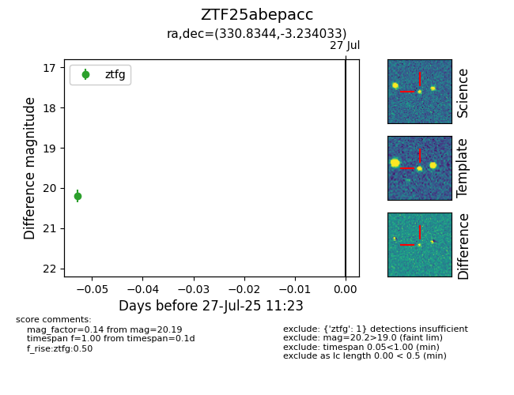

Target ZTF25abepacc at 2025-07-27 11:23, see:
FINK: fink-portal.org/ZTF25abepacc
Lasair: lasair-ztf.lsst.ac.uk/objects/ZTF25abepacc
ALeRCE: alerce.online/object/ZTF25abepacc
alt names
ZTF25abepacc (ztf,fink)
coordinates:
equatorial (ra, dec) = (330.8344,-3.23403)
galactic (l, b) = (56.2410,-43.29856)
photometry
last ztfg=20.19
1 ztfg detections
